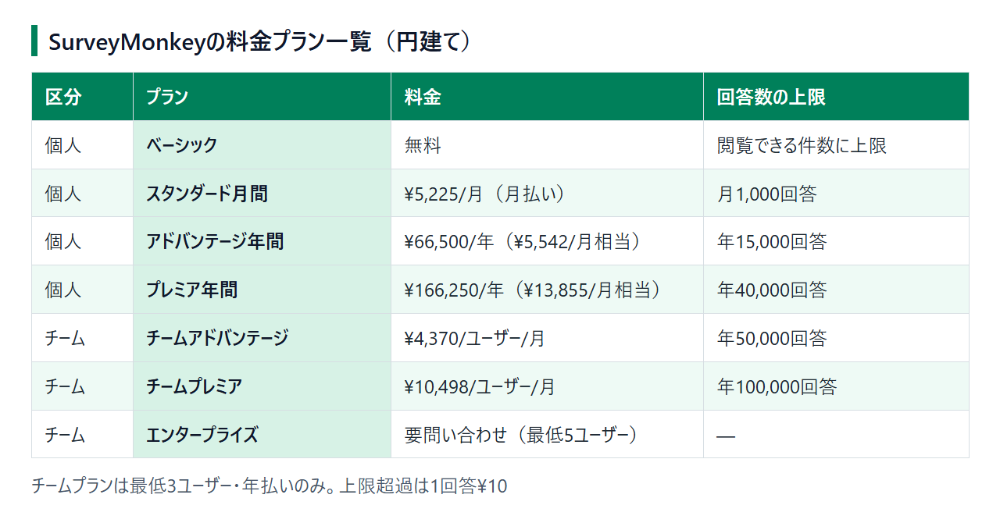

SurveyMonkey（サーベイモンキー）の料金プラン｜無料でできることと有料との違い
社内アンケートや顧客調査にSurveyMonkey（サーベイモンキー）を使おうとすると、最初に引っかかるのは「無料のままでどこまで集められるのか」です。ネット上の解説記事には改定前の価格が残っているものも多く、いま契約するといくらかかるのかが分かりにくくなっています。
日本から開く料金ページは円建て表示です。現行の円建て価格をもとに、無料で続けるか、個人・チームのどちらのプランに上げるかを整理します。
結論：質問数・回答数・エクスポートの3点で無料か有料かを決める
1本10問以内で、回答を画面で眺めるだけなら無料のベーシックで足ります。 11問以上のアンケートを作りたい、回答をファイルに書き出したい、回答を取りこぼしたくないという場合は有料プランが必要です。
- 無料のままでよい人：質問が10問以内で、集まった回答を管理画面で確認できれば十分
- 個人プランに上げる人：1人で作成・分析し、回答をCSVやExcelで書き出したい
- チームプランを検討する人：3人以上でアンケートや回答データを共有したい
料金ページは個人向けとチーム向けのタブに分かれていて、円建ての価格と、プランごとに集められる回答数の上限が並んでいます。
10問以内で、回答を画面で見るだけなら無料のベーシックで足りる
ベーシックでも、アンケートは本数の制限なく作れます。止まるのは次の3点です。
- 1本に入れられる質問は10問まで
- 回答をCSV・XLS・PDFで書き出せない
- 閲覧できる回答数に上限があり、超えた分は見られない
1人で使うなら個人プラン、3人以上で共有するならチームプランが候補
チームプランは最低3ユーザーからで、支払いは年払いだけです。1人で使う場合、チームプランを選ぶと3人分を払うことになるので、まずは個人プランから比べるのが順当です。人数別の総額は後半で計算します。
SurveyMonkeyの料金プラン一覧（個人向け・チーム向け）
SurveyMonkeyの有料プランは、個人向け3つとチーム向け3つに分かれています。どのプランにも、価格とあわせて「集められる回答数の上限」が決まっています。

個人向け：ベーシック・スタンダード月間・アドバンテージ年間・プレミア年間
- ベーシック：無料
- スタンダード月間：¥5,225/月（月払い・月1,000回答まで）
- アドバンテージ年間：¥66,500/年（月あたり¥5,542相当・年15,000回答まで）
- プレミア年間：¥166,250/年（月あたり¥13,855相当・年40,000回答まで）
アドバンテージとプレミアは月額換算も表示されますが、請求されるのは1年分の年額です。
チーム向け：チームアドバンテージ・チームプレミア・エンタープライズ
- チームアドバンテージ：¥4,370/ユーザー/月（年50,000回答まで）
- チームプレミア：¥10,498/ユーザー/月（年100,000回答まで）
- エンタープライズ：公開価格なし・要問い合わせ（最低5ユーザー）
チームプランの回答数の上限はユーザーごとではなく、チーム全員の合計で数えます。
月払いはスタンダードだけ、ほかは年払い
月単位で契約できるのは、個人向けのスタンダード月間だけです。アドバンテージ、プレミア、チームプランはすべて年払いで、契約時に1年分を前払いします。
短期の調査で数か月だけ使うなら、スタンダード月間が合います。1年通して使う場合も、総額はスタンダード月間を12か月続けたほうが安くなります。年払いを選ぶ理由は、回答数の上限の持ち方とサポートです。
回答数の上限を超えたら1回答¥10かかる
有料プランで回答数の上限を超えると、1回答あたり¥10の追加料金がかかります。上限の数え方はプランで違い、スタンダード月間は月ごと、アドバンテージ・プレミア・チームプランは年ごとの上限です。
たとえばスタンダード月間で、ある月だけ1,500件の回答が集まると、超過した500件分で¥5,000が上乗せされます。回答数が月によって大きく変わる調査では、年単位で上限を持つプランのほうが余裕を持てます。
円建ての表示価格は、これまでにも改定されています。ほかのサイトで見かけた金額と違う場合は、申し込み画面に表示される金額が現在の価格です。
無料プラン（ベーシック）でできること・できないこと
ベーシックは期限なく無料で使えます。作って配るまでは困りませんが、集まった回答を活用する段階で制限にぶつかります。
できること：アンケートは何本でも作れ、1本10問まで
- アンケートの作成数は無制限
- 1本のアンケートに入れられる質問は10問まで
- 選択式や自由記述など、一般的な設問タイプを使える
- 集まった回答を管理画面で閲覧できる（上限あり）
満足度を5段階で聞き、最後に自由記述を1つ置く程度の短いアンケートなら、ベーシックで形になります。
できないこと：高度なロジック・独自ブランディング・エクスポート
- 分岐やランダム化、パイピングといった高度なロジック
- 自社のロゴや色に合わせる独自ブランディング
- 回答データのエクスポート（CSV・XLS・PDF）
回答によって質問やページを飛ばすスキップロジックは、ベーシックでも制限つきで使えます。回答をExcelで集計し直す作業は無料ではできないので、報告書づくりまで考えているならここが有料化の分かれ目です。
閲覧できる回答数には上限があり、超えた分は365日で削除される
ベーシックで閲覧できる回答数は、1本のアンケートごとに上限があります。解説記事によって書かれている件数はまちまちです。公式の公開ページには具体数の記載がなく、ログインした画面で確かめることになります。
上限を超えて集まった回答は、閲覧できない状態で保管されます。自分で削除することもできます。削除しなくても、有料プランに上げなければ遅くとも回答を集めた日から365日で削除されます。回答が多く集まりそうなアンケートを無料で配ると、せっかく集めたデータを見られないまま失うおそれがあります。
無料トライアルの代わりにベーシックで試せる
SurveyMonkeyには無料のベーシックがあるので、アンケートを作って実際に配ってみるところまでは費用がかかりません。質問の作り方や回答画面の見え方を確かめてから、必要になった時点で有料プランに切り替えられます。
有料プランを期間限定で試せる無料トライアルは、料金ページに案内がありません。公式のFAQでも、無料トライアルについての質問には「ベーシックで試せる」と答えています。
有料プランで使えるようになることと、個人・チームの選び方
有料プランでは質問数の上限がなくなり、回答を書き出せるようになります。プランは利用人数と年間の回答数で選びます。
質問数の上限がなくなり、回答を書き出せる
- アンケートの本数・質問数がともに無制限になる
- 回答をCSV・XLS・PPT・PDFで書き出せる
- プランごとに決まった回答数まで集計・閲覧できる
高度な分岐は、有料のなかでもプレミア年間・チームプレミア以上に限られ、アドバンテージ年間では使えません。回答に応じて複雑に質問を出し分けたい場合は、プレミア年間が比較の起点になります。
サポートの窓口はプランで変わる
- チャットサポート：アドバンテージ以上のプラン
- 電話サポート：プレミア、チームプレミア、エンタープライズのみ
スタンダード月間にはチャットや電話の窓口がなく、相談先は英語のメール窓口になります。操作で詰まったときにチャットで相談したいなら、アドバンテージ以上が候補です。
1人ならチームより個人プランのほうが総額を抑えやすい
1年間使った場合の総額を並べると、次のとおりです。
- スタンダード月間を12か月：¥62,700（¥5,225×12か月・年12,000回答まで）
- アドバンテージ年間：¥66,500（年15,000回答まで）
- プレミア年間：¥166,250（年40,000回答まで）
- チームアドバンテージ（最低3ユーザー）：¥157,320（¥4,370×3人×12か月・年50,000回答まで）
- チームプレミア（最低3ユーザー）：¥377,928（¥10,498×3人×12か月）
1年通して使うなら、スタンダード月間のほうがアドバンテージ年間より¥3,800安くなります。ただしスタンダード月間は、毎月1,000件で上限が区切られます。回答が特定の月に集中する調査や、チャットで相談したい場合は、アドバンテージ年間を選ぶ理由があります。
1人でチームアドバンテージを契約すると、最低3ユーザー分の¥157,320がかかり、アドバンテージ年間の2倍を超えます。2人で使う場合も、チームプランは3ユーザー分の支払いです。
例外は、1人でも年40,000件を超える回答を集める場合です。回答数だけで見ると、チームアドバンテージ3ユーザー分（¥157,320・年50,000回答）はプレミア年間（¥166,250・年40,000回答）より安く、上限も多くなります。ただしチームアドバンテージでは高度な分岐も電話サポートも使えないので、この2つが要るならプレミア年間を選びます。
日本からの支払い方法・請求書・消費税
SurveyMonkeyは日本から契約すると円建てで請求され、年払いなら銀行振込も選べます。USD建てのツールと違い、為替の動きで毎回の請求額が変わることはありません。
請求は円建て、支払いはクレジットカード・デビットカードが基本
請求通貨は、支払いに使うカードなどの請求先の国で決まり、日本の場合は円（JPY）です。支払い手段の基本はクレジットカードとデビットカードです。
カードはVisa・Mastercardのほか、円建てならJCBも使えます。
年払いなら銀行振込も選べる
年払いのプランでは、カードのほかに銀行振込（電信送金）を選べます。請求書を受け取り、それに沿って振り込む流れです。月払いのスタンダード月間では、銀行振込は使えません。
カード払いでも、申し込み時にInvoiceを選ぶと先に請求書が発行され、Transaction Historyからカードで支払えます。この払い方は、年払いのプランに限りません。
請求書はTransaction Historyから取得できる
請求書は、My Account → Transaction History から表示・ダウンロードできます。
日本の適格請求書発行事業者の登録番号が請求書に載るかどうかは、公式の案内からは確認できませんでした。海外事業者への支払いは消費税の扱いが国内の取引と異なる場合があるので、経費処理の方法は税理士に確認してください。
画面は日本語で使えるが、問い合わせは英語
日本語の公式サイトがあり、アカウントの表示言語も日本語に切り替えられます。日本語のヘルプ記事も用意されています。一方で、メール・チャット・電話のサポート窓口は英語での対応です。
Googleフォーム・Typeformとの料金比較
無料で配るだけなら、GoogleフォームやTypeformも候補になります。料金と無料枠の違いに絞って並べます。なお、SurveyMonkeyの円建て価格は税込か税別かが料金ページに書かれていないため、税別で示されるGoogle Workspaceの金額とは単純に比べられません。
Googleフォーム：個人のGoogleアカウントなら無料、社内利用はWorkspaceに含まれる
- 個人のGoogleアカウントがあれば無料で使える
- 回答をそのままGoogleスプレッドシートに書き出せる
- 会社のドメインや管理機能が必要なら、Google Workspaceに含まれる（Business Starter ¥800/ユーザー/月・年間契約・税別）
SurveyMonkeyのベーシックと違い、無料でも回答を書き出せる点が大きな差です。フォーム単体の有料プランはありません。
社内の出欠確認や簡単な満足度調査のように、回答を表計算で扱えれば済む用途に向いています。
Typeform：無料は全フォーム合計で月10回答、有料はUSD建て
- 無料プランは、全フォームを合計して月10回答まで（フォーム数・質問数は無制限で、分岐ロジックも使える）
- 最安のBasicは年払いなら$28/月相当（年$336）、月払いなら$39/月（1ドル=157円換算で、それぞれ約4,396円・約6,123円。為替で変動します）で、月100回答・1ユーザー
- 管理画面は英語とスペイン語のみだが、回答者に見せるフォームは日本語で表示できる
月払い同士で比べると、SurveyMonkeyのスタンダード月間は¥5,225で月1,000回答、TypeformのBasicは$39で月100回答です。Typeformが向いているのは、無料のうちに分岐ロジックを組んでみたい人や、英語の管理画面に抵抗がない人です。ただし、回答数の少ない用途が前提になります。
SurveyMonkeyを選ぶ理由が残るケース
Typeformと比べると、SurveyMonkeyには次の違いがあります。
- 請求が円建てで、為替の影響を受けない
- 管理画面を日本語で使える
Googleフォームも日本語で使え、無料で回答をスプレッドシートに書き出せます。回答を表計算で扱えれば済むなら、Googleフォームで足ります。SurveyMonkeyの有料プランが候補になるのは、結果をPPTやPDFの形式で書き出して報告書に使いたい場合です。年に数万件の回答を扱い、回答数の上限と超過料金が決まったプランで予算を組みたい場合も当てはまります。
解約・ダウングレードの手順と注意点
自動更新は自分で止められますが、残りの期間分は返金されません。ベーシックに戻れば、無料の制限もそのままかかります。
Downgrade to Basicで自動更新を止める
手順は、プロフィール → My Account → Billing Details → Manage Subscription → Downgrade to Basic です。ここで操作すると自動更新が止まり、次の請求日にベーシックへ移ります。
期間終了までは有料機能を使え、残りの期間は返金されない
- 自動更新を止めても、契約期間の終了までは有料機能を使える
- 次の請求日にベーシックへ切り替わる
- 解約やアカウント削除をしても、残りの期間分は自動では返金されない
- 法令で求められる場合を除き、返金には応じていない
数か月だけ使う予定なら、年払いより、必要な月だけ契約できるスタンダード月間のほうが無駄がありません。
ベーシックではエクスポートできないので、回答は有料期間中に書き出す
ベーシックに戻ると、回答のエクスポートはできなくなります。閲覧できる回答数にも上限がかかるため、解約を決めたら、契約期間が終わる前に必要な回答をCSVやXLSで書き出しておいてください。ダウングレード後は、ベーシックの上限を超えた回答は閲覧できなくなり、集めた日から365日を過ぎたものは削除されます。
解約前に書き出したファイルがあれば、ベーシックに戻ったあともExcelなどで集計を続けられます。
SurveyMonkeyの料金に関するよくある質問
SurveyMonkeyはずっと無料で使える？
使えます。ベーシックは期限なく無料で、アンケートも何本でも作れます。ただし1本10問まで、閲覧できる回答数に上限があり、回答の書き出しはできません。この3つが問題にならない範囲なら、無料のまま使い続けられます。なお、有料プランを期間限定で無料で試せるトライアルは、料金ページに案内がありません。
QRコードで配布するのに料金はかかる？
QRコードの発行自体は、無料のベーシックでもできます。Webリンク形式の回答収集（コレクター）を作るとQRコードの画像をダウンロードでき、チラシや掲示物に載せて配れます。ただし料金表ではベーシックのQRコードは「制限あり」とされ、使える範囲はアカウントによって異なる場合があります。集まった回答の閲覧上限も、通常どおりかかります。
エンタープライズの料金はいくら？
公開価格はなく、英語の料金ページではデモの申し込みから見積もりを受け取る形です。契約は最低5ユーザーからです。
まとめ：無料・個人・チームのどれにするか
無料で続けるか有料にするかは、質問数、回答数、エクスポートの必要性で決まります。有料にするなら、利用人数と支払いサイクルで個人プランかチームプランかを選びます。
契約前の最終チェック
- 1本のアンケートは10問以内に収まるか
- 回答をどれだけ集め、ファイルに書き出す必要があるか
- 何人でアンケートや回答を共有するか（3人以上ならチームプランも候補）
- 月払いのスタンダード月間か、年払いのプランか
- 年払いは途中で解約しても返金されないこと
まずはベーシックでアンケートを作って配り、集まる回答数と書き出しの必要性が見えてから有料プランを選んでも遅くありません。回答が上限を超えそうになった時点で、個人かチームかを判断してください。